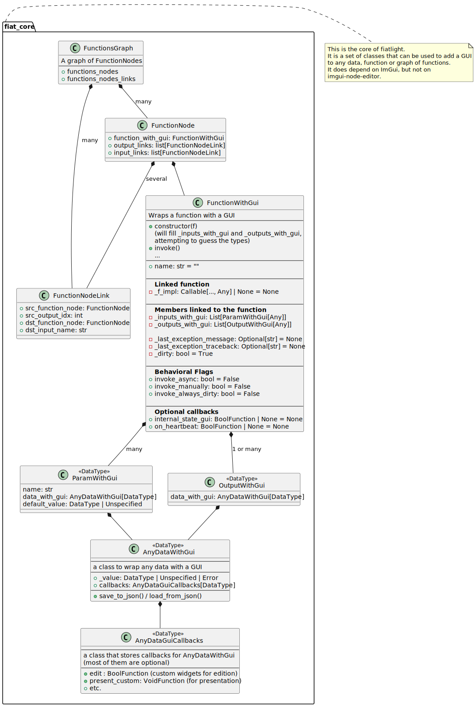

AnyDataWithGui#
Introduction#
AnyDataWithGui associate a GUI to any type, with associated GUI callbacks, allowing for custom rendering, editing, serialization, and event handling within the Fiatlight framework.
It uses callbacks which are stored inside AnyDataGuiCallback.
Signature#
Below, we display the class header, i.e., the class without its methods bodies, to give a quick overview of its structure.
You can see its full code at AnyDataWithGui.
from fiatlight.fiat_notebook import look_at_code
%look_at_class_header fiatlight.fiat_core.AnyDataWithGui
class AnyDataWithGui(Generic[DataType]):
"""AnyDataWithGui: a GUI associated to a type.
AnyDataWithGui[DataType]
========================
This class manages data of any type with associated GUI callbacks, allowing for custom rendering, editing,
serialization, and event handling within the Fiatlight framework.
Members:
--------
# The type of the data, e.g. int, str, typing.List[int], typing.Tuple[int, str], typing.Optional[int], etc.
_type: Type[DataType]
# The value of the data - can be a DataType, Unspecified, or Error
# It is accessed through the value property, which triggers the on_change callback (if set)
_value: DataType | Unspecified | Error = UnspecifiedValue
# Callbacks for the GUI
# This is the heart of FiatLight: the GUI is defined by the callbacks.
# Think of them as __dunder__ methods for the GUI.
callbacks: AnyDataGuiCallbacks[DataType]
# If True, the value can be None. This is useful when the data is optional.
# Otherwise, any None value will be considered as an Error.
# Note: when using Optional[any registered type], this flag is automatically set to True.
can_be_none: bool = False
Property:
---------
# Custom attributes that can be set by the user, to give hints to the GUI.
# For example, with this function declaration,
# def f(x: int, y: int) -> int:
# return x + y
# f.x__range = (0, 10)
# fiat_attributes["range"] will be (0, 10) for the parameter x.
@property
fiat_attributes -> dict[str, Any]
"""
_type: Type[DataType] | None
_value: DataType | Unspecified | Error | Invalid[DataType] = UnspecifiedValue
callbacks: AnyDataGuiCallbacks[DataType]
can_be_none: bool = False
_fiat_attributes: FiatAttributes
_expanded: bool = False
_can_set_unspecified_or_default: bool = False
label: str | None = None
label_color: ImVec4 | None = None
tooltip: str | None = None
status_tooltip: str | None = None
class CollapseOrExpand(Enum):
collapse = 'Collapse All'
expand = 'Expand All'
class PresentOrEdit(Enum):
present = 'View'
edit = 'Edit'
class _Init_Section:
"""
# ------------------------------------------------------------------------------------------------------------------
# Initialization
# ------------------------------------------------------------------------------------------------------------------
"""
pass
def __init__(self, data_type: Type[DataType] | None) -> None:
"""Initialize the AnyDataWithGui with a type, an unspecified value, and no callbacks."""
pass
class _Value_Section:
"""
# ------------------------------------------------------------------------------------------------------------------
# Value getter and setter + get_actual_value (which returns a DataType or raises an exception)
# ------------------------------------------------------------------------------------------------------------------
"""
pass
@property
def value(self) -> DataType | Unspecified | Error | Invalid[DataType]:
"""The value of the data, accessed through the value property.
Warning: it might be an instance of `Unspecified` (user did not enter any value) or `Error` (an error was triggered)
"""
pass
@value.setter
def value(self, new_value: DataType | Unspecified | Error | Invalid[DataType]) -> None:
"""Set the value of the data. This triggers the on_change callback (if set)"""
pass
def get_actual_value(self) -> DataType:
"""Returns the actual value of the data, or raises an exception if the value is Unspecified or Error or Invalid
When we are inside a callback, we can be sure that the value is of the correct type, so we can call this method
instead of accessing the value directly and checking for Unspecified or Error.
"""
pass
def get_actual_or_invalid_value(self) -> DataType:
"""Returns the actual value of the data, or raises an exception if the value is Unspecified or Error"""
pass
class _CustomAttributes_Section:
"""
# ------------------------------------------------------------------------------------------------------------------
# Custom Attributes
# ------------------------------------------------------------------------------------------------------------------
"""
pass
@staticmethod
def possible_fiat_attributes() -> PossibleFiatAttributes | None:
"""Return the possible custom attributes for this type, if available.
Should be overridden in subclasses, when custom attributes are available.
It is strongly advised to return a class variable, or a global variable
to avoid creating a new instance each time this method is called.
"""
pass
@final
def possible_fiat_attributes_with_generic(self) -> tuple[PossibleFiatAttributes | None, PossibleFiatAttributes]:
pass
@property
def fiat_attributes(self) -> FiatAttributes:
pass
def merge_fiat_attributes(self, fiat_attrs: FiatAttributes) -> None:
"""Merge custom attributes with the existing ones"""
pass
def _handle_generic_attrs(self) -> None:
"""Handle generic custom attributes"""
pass
@staticmethod
def propagate_label_and_tooltip(a: 'AnyDataWithGui[Any]', b: 'AnyDataWithGui[Any]') -> None:
"""Propagate label and tooltip from one AnyDataWithGui to another
Meant to be used with CompositeGui
"""
pass
class _Gui_Section:
"""
# ------------------------------------------------------------------------------------------------------------------
# Gui sections
# (Can also be used outside a function Node)
# ------------------------------------------------------------------------------------------------------------------
"""
def sub_items_can_collapse(self, _present_or_edit: PresentOrEdit) -> bool:
"""Overwrite this in derived classes if they provide multiple sub-items that can be collapsed"""
pass
def sub_items_collapse_or_expand(self, _collapse_or_expand: CollapseOrExpand) -> None:
"""Overwrite this in derived classes if they provide multiple sub-items that can be collapsed"""
pass
def sub_items_will_collapse_or_expand(self, _present_or_edit: PresentOrEdit) -> CollapseOrExpand:
"""Overwrite this in derived classes if they provide multiple sub-items that can be collapsed"""
pass
def _show_collapse_sub_items_buttons(self, present_or_edit: PresentOrEdit) -> None:
pass
def can_show_present_popup(self) -> bool:
pass
def can_show_edit_popup(self) -> bool:
pass
def _show_collapse_button(self) -> None:
pass
def _show_copy_to_clipboard_button(self) -> None:
pass
def can_collapse_present(self) -> bool:
pass
def can_collapse_edit(self) -> bool:
pass
def can_edit_on_header_line(self) -> bool:
pass
def can_present_on_header_line(self) -> bool:
pass
def _can_edit_on_next_lines_if_expanded(self) -> bool:
pass
def _can_present_on_next_lines_if_expanded(self) -> bool:
pass
def _is_editing_on_next_lines(self) -> bool:
pass
def _is_presenting_on_next_lines(self) -> bool:
pass
def _popup_window_name(self, params: GuiHeaderLineParams[DataType], present_or_edit: PresentOrEdit) -> str:
pass
def _gui_present_header_line(self, params: GuiHeaderLineParams[DataType]) -> None:
"""Present the value as a string in one line, or as a widget if it fits on one line"""
pass
def _gui_edit_header_line(self, params: GuiHeaderLineParams[DataType]) -> bool:
pass
def _show_set_unspecified_or_default_button(self) -> bool:
pass
def _gui_edit_next_lines(self, in_popup: bool) -> bool:
pass
def _gui_present_next_lines(self, in_popup: bool) -> None:
pass
def gui_present_customizable(self, params: GuiHeaderLineParams[DataType]) -> None:
"""Present the value using either the present callback or the default str conversion
May present on one line (if possible) or on multiple lines with an expand button
"""
pass
def gui_present(self) -> None:
pass
def gui_edit_customizable(self, params: GuiHeaderLineParams[DataType]) -> bool:
"""Call the edit callback. Returns True if the value has changed
May edit on one line (if possible) or on multiple lines with an expand button
"""
pass
def gui_edit(self) -> bool:
pass
class _Callbacks_Section:
"""
# ------------------------------------------------------------------------------------------------------------------
# Callbacks sections
# ------------------------------------------------------------------------------------------------------------------
"""
def set_edit_callback(self, edit_callback: DataEditFunction[DataType]) -> None:
"""Helper function to set the edit callback from a free function"""
pass
def set_present_callback(self, present_callback: DataPresentFunction[DataType], present_node_compatible: bool | None=None) -> None:
"""Helper function to set the present custom callback from a free function"""
pass
def add_validate_value_callback(self, cb: Callable[[DataType], None]) -> None:
pass
def _Serialization_Section(self) -> None:
"""
# ------------------------------------------------------------------------------------------------------------------
# Serialization and deserialization
# ------------------------------------------------------------------------------------------------------------------
"""
pass
@final
def call_save_to_dict(self, value: DataType | Unspecified | Error | Invalid[DataType]) -> JsonDict:
"""Serialize the value to a dictionary
Will call the save_to_dict callback if set, otherwise will use the default serialization, when available.
A default serialization is available for primitive types, tuples, and Pydantic models.
(This is how fiatlight saves the data to a JSON file)
Do not override these methods in descendant classes!
"""
pass
@final
def call_load_from_dict(self, json_data: JsonDict) -> DataType | Unspecified | Error:
"""Deserialize the value from a dictionary
Do not override these methods in descendant classes!
"""
pass
@final
def call_save_gui_options_to_json(self) -> JsonDict:
pass
@final
def call_load_gui_options_from_json(self, json_data: JsonDict) -> None:
pass
class _Utilities_Section:
"""
# ------------------------------------------------------------------------------------------------------------------
# Utilities
# ------------------------------------------------------------------------------------------------------------------
"""
def can_construct_default_value(self) -> bool:
pass
def construct_default_value(self) -> DataType:
pass
def datatype_qualified_name(self) -> str:
pass
def datatype_basename(self) -> str:
pass
def datatype_base_and_qualified_name(self) -> str:
pass
def datatype_value_to_str(self, value: DataType) -> str:
"""Convert the value to a string
Uses either the present_str callback, or the default str conversion
"""
pass
def datatype_value_to_clipboard_str(self, value: DataType) -> str:
"""Convert the value to a string for the clipboard
Uses either the clipboard_copy_str callback, or the default str conversion
"""
pass
def docstring_first_line(self) -> str | None:
"""Return the first line of the docstring, if available"""
pass
Architecture#
Below is a PlantUML diagram showing the architecture of the fiat_core module.
See the architecture page for the full architecture diagrams.
from fiatlight.fiat_notebook import plantuml_magic
%plantuml_include class_diagrams/fiat_core.puml
